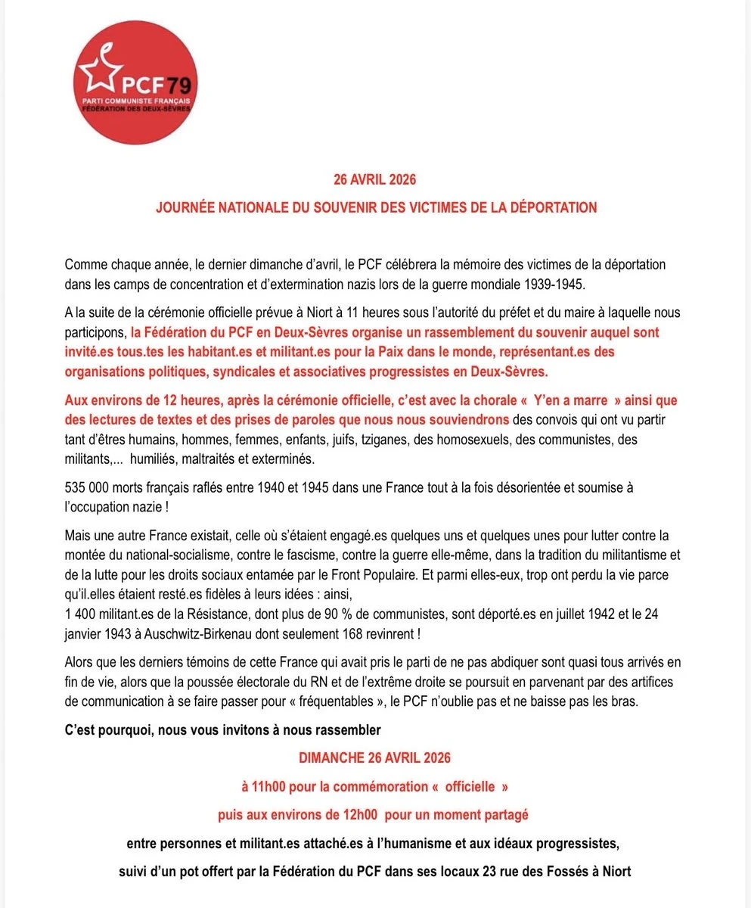

Publication sur X
26 avril à Niort. Un appel à honorer la mémoire des déportés
Date de publication sur X · 10 avril 2026
Repères éditoriaux
Nous avons appelé à honorer les victimes et les héros de la déportation. Le compte rendu du 26 avril documente la cérémonie niortaise.
Texte de la publication sur X
1 400 résistants déportés à Auschwitz. Plus de 90 % étaient communistes. 168 sont revenus.
Dimanche 26 avril, Niort, on honore leur mémoire. Parce que le PCF 79 n’oublie pas ceux qui ont refusé d’abdiquer. https://t.co/ePPLzqu6wh

Sources
PCF 79 · @79Parti sur X · AR-0005-TW-2042537332432064929
À lire aussi · À Châteaubriant, l’hommage du 22 octobre aux fusillés · Le lien d’origine
Publications associées
- À Niort, notre appel pour la Journée nationale du souvenir de la déportation · Notre appel sur Facebook
- À Niort, nous avons honoré la mémoire des victimes de la déportation · Compte rendu de la cérémonie du 26 avril
- À Niort, la Journée nationale du souvenir de la déportation · Annonce et compte rendu de la même commémoration